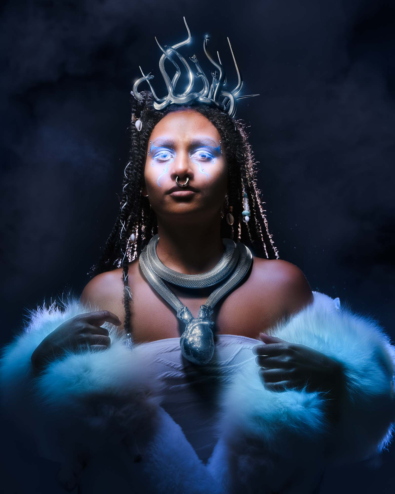

BEJEWELED
OVERVIEW
Blender / Photoshop / Nuke / PolyCam - 2024
This piece was inspired by the concept of an ice princess from another world, made in collaboration with Photographer Massimo Greco at Rochester Institute of Technology. We both wanted to produce a piece that was centered around silver jewelry. We produced the image over the span of about one week from ideation to final image. Massimmo directed the shoot, edited, and retouched, while I did compositing and all 3D elements which of comprised a silver snake necklace, headpiece and nose piecing. 3D snake models from sketchfab were used and heavily modified them to fit the needs of the project. Compositing was done with a combination of Nuke and Photoshop with some final minor touchups for print and web done in lightroom. 3D was entirely assembled in Blender.
